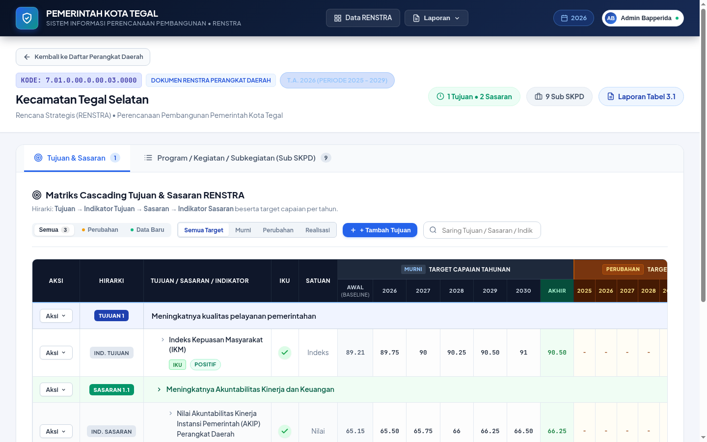
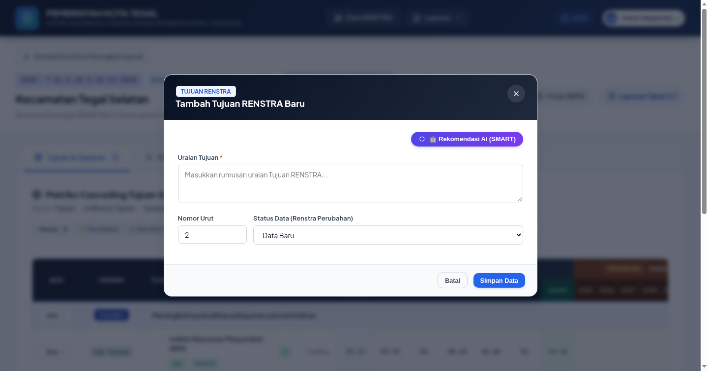
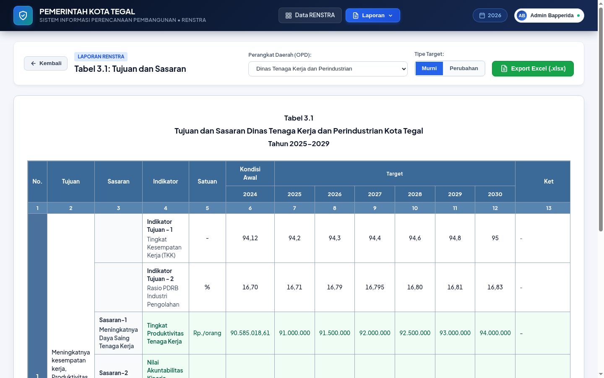
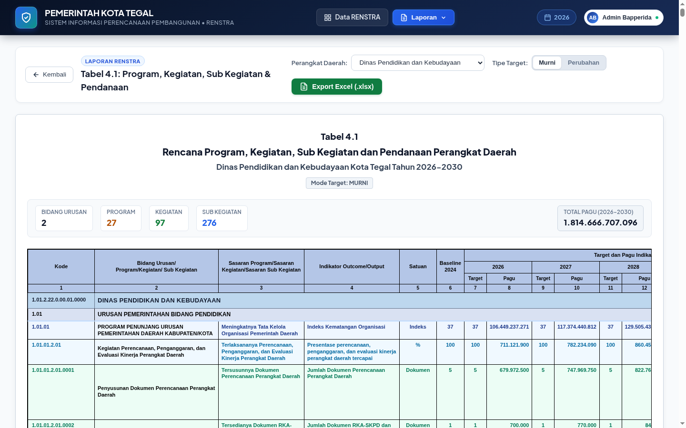
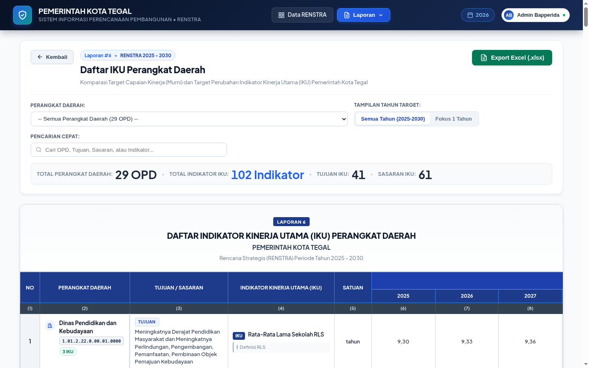

Pendahuluan & Konsep Sistem
Kerangka kerja perencanaan perubahan Renstra Kota Tegal Periode 2025–2029
Aplikasi RENSTRA (Rencana Strategis Perangkat Daerah) Perubahan Pemerintah Kota Tegal merupakan platform digital terpadu yang memfasilitasi penyusunan, pengendalian, evaluasi, dan penyelarasan dokumen perencanaan lima tahunan Perangkat Daerah terhadap RPJMD Kota Tegal Tahun 2025–2029.
Landasan Hukum & Kebijakan
- Undang-Undang Nomor 23 Tahun 2014 tentang Pemerintahan Daerah.
- Peraturan Menteri Dalam Negeri Nomor 86 Tahun 2017 tentang Tata Cara Perencanaan, Pengendalian dan Evaluasi Pembangunan Daerah, Tata Cara Evaluasi Rancangan Perda tentang RPJPD dan RPJMD, serta Tata Cara Perubahan RPJPD, RPJMD, dan Renstra Perangkat Daerah.
- Peraturan Menteri Dalam Negeri Nomor 90 Tahun 2019 tentang Klasifikasi, Kodefikasi, dan Nomenklatur Perencanaan Pembangunan dan Keuangan Daerah.
- Keputusan Menteri Dalam Negeri Nomor 050-5889 Tahun 2021 dan pemutakhirannya terkait pemutakhiran nomenklatur urusan, program, kegiatan, dan subkegiatan.
Akses & Login Akun Pengguna
Prosedur autentikasi aman menggunakan Single Sign-On (SSO) Google
Aplikasi menggunakan sistem keamanan Firebase Authentication dengan integrasi Google OAuth 2.0. Setiap pejabat perencana, operator Perangkat Daerah, dan tim Bapperida dapat masuk menggunakan akun Google resmi instansi atau akun email terverifikasi.
Buka Peramban & Kunjungi Aplikasi
Akses alamat sistem perencanaan RENSTRA melalui peramban resmi (disarankan Google Chrome, Microsoft Edge, atau Mozilla Firefox terbaru).
Klik Tombol "Masuk dengan Akun Google"
Pada layar login, klik tombol utama berwarna putih-biru bertuliskan Masuk dengan Akun Google.
Pilih Akun & Izinkan Akses
Pilih akun email kedinasan Anda pada jendela pop-up otentikasi Google. Sistem secara otomatis membaca peran dan membuka halaman dashboard.

Navigasi Halaman Utama (Daftar Perangkat Daerah)
Pusat kendali monitoring data dan status dokumen perencanaan
Halaman utama menyajikan direktori lengkap seluruh Organisasi Perangkat Daerah (OPD) di lingkungan Pemerintah Kota Tegal beserta metadata perencanaan tahun bersangkutan:

Elemen-Elemen Kunci pada Halaman Utama
| Komponen | Deskripsi & Lokasi | Fungsi Operasional |
|---|---|---|
| Tombol "Upload Dokumen Renstra" | Header atas kanan banner hero | Tautan langsung menuju portal monevrkpd.tegalkota.go.id/dokren untuk mengunggah dokumen PDF resmi (Rancangan Awal, Rancangan Akhir, atau Penetapan). |
| Kotak Pencarian Cepat | Atas tabel OPD | Menyaring nama perangkat daerah secara instan berdasarkan nama atau kode SKPD tanpa me-refresh halaman. |
| Kolom Dokumen Renstra | Kolom tabel status dokumen | Menampilkan nama file dokumen PDF terbaru yang telah diunggah oleh Perangkat Daerah beserta tanggal pengesahannya. |
| Badge Skor Audit AI | Kolom khusus Audit AI | Menampilkan persentase kecocokan 10 elemen perencanaan antara berkas PDF dengan database aplikasi (Warna Hijau, Kuning, Merah). |
| Tombol "Detail Renstra" | Kolom aksi paling kanan | Membuka halaman struktur pohon cascading (Tujuan, Sasaran, Program, Kegiatan, Sub Kegiatan) dari Perangkat Daerah bersangkutan. |
Audit Kesesuaian Dokumen Renstra (AI Audit Engine)
Pemeriksaan ketat kepatuhan kalimat sama persis antara Dokumen PDF dengan Database
Fitur Audit Dokumen AI dirancang khusus oleh Bapperida Kota Tegal untuk memverifikasi keselarasan redaksional dan numerik antara dokumen perencanaan yang telah diunggah (Penetapan Renstra atau Rancangan Akhir) dengan data riil yang dientri ke dalam database aplikasi.
10 Elemen yang Wajib Sama Persis
- Kalimat Tujuan (
uraitujuan) - Kalimat Indikator Tujuan (
uraitujuan_indikator) - Kalimat Sasaran (
uraisasaran) - Kalimat Indikator Sasaran (
uraisasaran_indikator) - Kalimat Program (
uraiprogram) - Kalimat Indikator Program (
uraiindikator) - Kalimat Kegiatan (
uraikegiatan) - Kalimat Indikator Kegiatan (
uraiindikator) - Kalimat Subkegiatan (
uraisubkegiatan) - Kalimat Indikator Subkegiatan (
uraisubkegiatan_indikator)

Tingkat Kategori Skor & Pinalti Data
| Rentang Skor | Status Hasil Audit | Arti & Konsekuensi |
|---|---|---|
| 90% - 100% | Sangat Sesuai | Semua rumusan kalimat 10 elemen dan pagu anggaran telah identik dan selaras penuh. |
| 75% - 89% | Sesuai | Mayoritas elemen selaras; terdapat beberapa perbedaan redaksi kecil atau target minor. |
| < 75% | Terdapat Selisih | Terdapat selisih nominal pagu anggaran atau perbedaan redaksi kalimat yang memerlukan koreksi. |
| Maks. 50% | Perlu Perbaikan (Belum Entri Tujuan/Sasaran) | Pinalti Otomatis: Jika Perangkat Daerah belum mengentri rumusan Tujuan dan/atau Sasaran di database, sistem mengunci nilai maksimal 50% dan menolak pemberian skor tinggi sampai entri cascading diselesaikan. |
Tombol "Analisa Ulang"
Setelah Perangkat Daerah memperbaiki susunan kalimat atau angka di database maupun mengunggah revisi PDF di portal Dokren, klik tombol hijau "Analisa Ulang" pada bagian bawah modal audit untuk memicu audit ulang secara instan.
Pohon Kinerja (Cascading) Renstra
Visualisasi dan navigasi struktur berjenjang dari Tujuan hingga Sub Kegiatan
Halaman Rincian RENSTRA OPD menampilkan cascading berjenjang yang mencerminkan logika perencanaan kinerja pembangunan daerah:

Hierarki 5 Level Perencanaan:
Level 1: Tujuan Renstra
Pernyataan kondisi akhir yang ingin dicapai OPD selama 5 tahun, dilengkapi dengan Indikator Tujuan dan target tahunan.
Level 2: Sasaran Renstra & IKU
Rumusan hasil (*outcome*) strategis turunan dari Tujuan. Indikator sasaran yang berstatus kunci ditandai sebagai Indikator Kinerja Utama (IKU).
Level 3: Program Prioritas
Kumpulan instrumen kebijakan dan urusan yang mengelompokkan kegiatan pembangunan, dilengkapi Indikator Program dan akumulasi pagu indikatif.
Level 4: Kegiatan
Bagian dari program yang dilaksanakan oleh bidang/unit kerja operasional untuk menghasilkan keluaran (*output*).
Level 5: Sub Kegiatan & Pagu Anggaran
Unit aktivitas terkecil yang mengikat alokasi pagu belanja dan target volume keluaran riil per tahun anggaran.
Panduan Lengkap CRUD 10 Elemen Perencanaan
Sistem menyediakan manajemen data penuh CRUD (Create, Read, Update, Delete) untuk setiap tingkat hirarki perencanaan. Gunakan menu pintasan berikut untuk langsung menuju petunjuk operasional elemen yang diinginkan:
Tujuan Renstra (Level 1)
Tujuan Renstra merumuskan kondisi masa depan atau dampak pembangunan makro yang ingin diwujudkan oleh Perangkat Daerah dalam jangka waktu 5 tahun (2025–2029) yang selaras dengan Visi & Misi RPJMD Kota Tegal.
Menambahkan Tujuan Baru
- Buka Tab "Tujuan & Sasaran" pada halaman rincian Renstra OPD.
- Klik tombol hijau "+ Tambah Tujuan" di pojok kanan atas toolbar cascading.
- Isi Uraian Tujuan (wajib, disalin persis dari Dokumen Renstra Perubahan).
- Tentukan Nomor Urut (misal: 1, 2, dst) untuk mengatur urutan susunan.
- Pilih Status Data (Otomatis / Data Baru / Ada Perubahan / Tetap).
- Klik tombol "Simpan Tujuan" untuk menyimpan ke database.
Tampilan di Antarmuka
- Ditampilkan sebagai Kartu Induk Level 1 dengan header hijau/navy bergaris tepi emerald.
- Menampilkan nomor urut tujuan, rumusan kalimat tujuan, badge status data, dan tombol aksi (Ubah/Hapus/Tambah Sasaran).
- Memuat sub-tabel Indikator Tujuan di bagian bawah teks tujuan dan membawahi seluruh blok Sasaran.
Memperbarui Tujuan
- Klik tombol Ubah (ikon pensil ✏️) pada header kartu Tujuan yang ingin diedit.
- Modal formulir terbuka dengan data terisi otomatis. Anda dapat memperbaiki redaksi teks kalimat, mengubah nomor urut, atau status perubahan.
- Gunakan tombol 🤖 Rekomendasi AI (SMART) untuk meninjau apakah kalimat tujuan telah memenuhi standar baku perencanaan.
- Klik "Simpan Perubahan" untuk menyimpan pembaruan.
Menghapus Tujuan & Dampaknya
- Klik tombol Hapus (ikon tempat sampah 🗑️) pada kartu Tujuan.
- Modal konfirmasi bahaya warna merah akan muncul meminta konfirmasi tindakan.
-
⚠️ Peringatan Kritis: Menghapus Tujuan akan menghapus secara permanen seluruh Indikator Tujuan, Sasaran, dan Indikator Sasaran di bawahnya secara otomatis (*cascade delete*).
| Nama Kolom Input | Tipe / Pilihan | Keterangan & Kaidah Pengisian |
|---|---|---|
uraian * |
Text / Textarea | Rumusan kalimat Tujuan Renstra. Wajib sama persis dengan naskah Bab IV Renstra OPD. |
no_urut |
Angka (Integer) | Urutan penampilan tujuan dalam laporan resmi (1, 2, 3...). |
perubahan_status |
Dropdown | Status pergeseran Renstra: otomatis, baru, perubahan, tetap. |
Indikator Tujuan (Level 1b)
Indikator Tujuan mengukur keberhasilan dampak makro dari Tujuan Renstra, dilengkapi dengan angka baseline tahun awal (2024/2025), target tahunan murni, target perubahan (2025–2030), serta realisasi kinerja.
Menambahkan Indikator Tujuan
- Pada kartu Tujuan yang bersangkutan, klik tombol "+ Indikator" di samping judul tabel indikator.
- Masukkan Uraian Indikator Kinerja (contoh: Indeks Kepuasan Layanan Perangkat Daerah).
- Isi Satuan (misal:
%,Nilai,Poin) dan pilih Status Polaritas (positif/negatif/akumulatif). - Isikan nilai target murni: Target Awal (Baseline), Target 2025, 2026, 2027, 2028, 2029, dan 2030.
- Klik "Simpan Indikator".
Penyajian Data di Tabel
- Tampil dalam baris tabel di bawah Tujuan dengan nomor urut, uraian indikator, satuan, dan status polaritas arah.
- Kolom target menampilkan angka target murni dan angka target perubahan bersanding.
- Jika terdapat perbedaan antara target murni dan target perubahan pada tahun tertentu, kolom target perubahan otomatis diberi penanda visual khusus (*highlight diff*).
Mengubah & Rekalibrasi Target
- Klik tombol Ubah (✏️) di baris indikator tujuan yang dipilih.
- Dapat mengubah nama indikator, satuan, status polaritas, dan nomor urut.
- Fitur Pintar "Salin Target Murni": Klik tombol "Salin Target Murni" untuk menyalin nilai seluruh tahun dari target murni ke target perubahan dengan 1-klik, lalu sesuaikan tahun yang mengalami perubahan.
- Isikan nilai Realisasi tahun berjalan jika evaluasi kinerja telah tersedia.
Penghapusan Indikator
- Klik tombol Hapus (🗑️) pada baris indikator tujuan.
- Konfirmasi penghapusan pada modal dialog.
- Data indikator beserta target 5 tahun dan riwayat realisasi akan dihapus dari tabel tujuan tanpa menghapus entri Tujuan induknya.
Sasaran Renstra (Level 2)
Sasaran Renstra adalah rumusan kondisi spesifik yang ingin dicapai yang merupakan penjabaran logis dari Tujuan Renstra. Sasaran menjadi jangkar bagi penetapan Program Prioritas dan Indikator Kinerja Utama (IKU).
Menambahkan Sasaran
- Pada kartu Tujuan yang menjadi induk, klik tombol "+ Tambah Sasaran".
- Dengan mengklik tombol di dalam kartu Tujuan terkait, sistem otomatis mengunci relasi
id_tujuansehingga tidak terjadi salah pengelompokan. - Ketik Uraian Sasaran (rumusan *outcome* yang fokus dan berorientasi hasil).
- Tentukan Nomor Urut dan pilih Status Perubahan.
- Klik "Simpan Sasaran".
Tampilan di Antarmuka
- Tampil sebagai sub-kartu berbingkai biru/abu-abu di dalam blok Tujuan induk.
- Memiliki badge SASARAN [No], teks rumusan sasaran, tombol Ubah/Hapus/Tambah Indikator Sasaran, serta tabel Indikator Sasaran di bawahnya.
Memperbarui Sasaran
- Klik tombol Ubah (✏️) pada header sub-kartu Sasaran.
- Form modal menampilkan rumusan sasaran dan nomor urut saat ini.
- Gunakan Asisten AI SMART bila membutuhkan saran perbaikan formulasi sasaran agar lebih tajam dan akuntabel.
- Klik "Simpan Perubahan".
Menghapus Sasaran
- Klik tombol Hapus (🗑️) pada sub-kartu Sasaran.
-
⚠️ Peringatan Kritis: Menghapus Sasaran akan menghapus secara permanen seluruh Indikator Sasaran di bawahnya secara otomatis.
Indikator Sasaran & IKU (Level 2b)
Indikator Sasaran mengukur ketercapaian sasaran strategis. Indikator sasaran yang memiliki dampak paling esensial wajib ditandai sebagai Indikator Kinerja Utama (IKU) yang dipertanggungjawabkan dalam LAKIP dan Laporan Kinerja Walikota.
Menambahkan Indikator Sasaran
- Pada kartu Sasaran terkait, klik tombol "+ Indikator Sasaran".
- Ketik Uraian Indikator Kinerja dan tentukan Satuan.
- Pilih Status Polaritas:
positif(makin tinggi makin baik),negatif(makin rendah makin baik, misal angka stunting), atauakumulatif. - Penandaan IKU: Centang kotak "Tandai sebagai Indikator Kinerja Utama (IKU)" jika indikator ini merupakan IKU Perangkat Daerah.
- Isi deretan Target Murni (Baseline, 2025–2030) lalu klik "Simpan Indikator".
Penyajian di Antarmuka
- Ditampilkan pada tabel indikator sasaran dengan penanda visual: indikator IKU memiliki badge hijau mencolok
IKU. - Indikator bertanda IKU otomatis disinkronkan ke Modul Laporan IKU (Bab 7) tanpa perlu entri ganda.
- Menampilkan target murni vs target perubahan per tahun anggaran.
Memperbarui Indikator Sasaran
- Klik tombol Ubah (✏️) di baris indikator sasaran.
- Dapat mengubah teks indikator, satuan, status polaritas, dan status penandaan IKU.
- Gunakan tombol "Salin Target Murni" untuk menduplikasi target ke kolom Target Perubahan dalam sekejap, kemudian ubah target tahun perubahan yang direvisi.
- Masukkan angka Realisasi hasil pengukuran kinerja tahun berjalan.
Menghapus Indikator Sasaran
- Klik tombol Hapus (🗑️) pada baris indikator sasaran.
- Konfirmasi penghapusan data.
- Jika indikator bertanda IKU dihapus, indikator tersebut otomatis terhapus dari daftar IKU di seluruh laporan resmi.
Program Prioritas (Level 3)
Program Prioritas merupakan pengelompokan kegiatan pembangunan daerah sesuai urusan pemerintahan daerah yang berpedoman pada Kepmendagri 050-5889 / Permendagri 90/2019. Program mengakumulasikan seluruh pagu anggaran kegiatan di bawahnya.
Menambahkan Program
- Buka Tab "Program & Kegiatan" pada halaman rincian Renstra OPD.
- Klik tombol biru "+ Tambah Program" pada toolbar atas.
- Referensi Otomatis SIPD-RI: Pilih program dari dropdown referensi resmi. Sistem otomatis mengisi Kode Program (contoh:
1.01.01) dan Nama Program Resmi. - Hubungkan program ke Sasaran Renstra yang relevan untuk memastikan cascading terhubung utuh.
- Klik "Simpan Program".
Tampilan di Tabel Cascading
- Ditampilkan sebagai baris induk berwarna biru dongker/navy dengan kode program tebal dan nama program resmi.
- Memuat rekapitulasi Akumulasi Total Pagu Anggaran Murni & Perubahan yang dihitung otomatis dari seluruh subkegiatan di bawahnya.
- Menampilkan baris Indikator Program tepat di bawah nama program.
Memperbarui Program
- Klik menu aksi (dropdown tiga titik atau ikon pensil ✏️) pada baris Program lalu pilih "Ubah Program".
- Dapat menyesuaikan kode program, uraian nama program, keterkaitan sasaran pengikat, atau status pergeseran.
- Klik "Simpan Perubahan" untuk menerapkan pembaruan.
Menghapus Program & Dampaknya
- Pilih menu "Hapus Program" pada menu aksi baris program.
-
⚠️ Peringatan Kritis: Menghapus Program akan menghapus secara permanen seluruh Indikator Program, Kegiatan, Indikator Kegiatan, Subkegiatan, Indikator Subkegiatan, dan seluruh Pagu Anggaran di bawah program ini!
Indikator Program (Level 3b)
Indikator Program mengukur keluaran/hasil kumulatif dari pelaksanaan program prioritas terhadap target kinerja yang telah digariskan.
Menambahkan Indikator Program
- Pada baris Program terkait, klik tombol aksi "+ Indikator Program".
- Isi Uraian Indikator Kinerja, tentukan Satuan Ukuran dan Status Polaritas.
- Isi volume target murni 2025–2030 dan target perubahan.
- Klik "Simpan Indikator".
Penyajian Data
- Ditampilkan sebagai baris dengan label badge ungu
IND. PROGRAM. - Menampilkan kolom satuan, target murni per tahun, target perubahan per tahun, dan kolom realisasi.
Mengedit Indikator Program
- Klik tombol Ubah (✏️) pada baris indikator program.
- Dapat mengedit teks rumusan indikator, satuan, target tahunan, tombol cepat "Salin Target Murni", dan memasukkan angka realisasi evaluasi.
- Klik "Simpan Perubahan".
Menghapus Indikator Program
- Klik tombol Hapus (🗑️) pada baris indikator program.
- Konfirmasi penghapusan data pada kotak dialog.
- Indikator program terhapus tanpa memengaruhi baris Program induk maupun Kegiatan di bawahnya.
Kegiatan Renstra (Level 4)
Kegiatan adalah bagian dari program yang dilaksanakan oleh bidang/unit kerja Perangkat Daerah untuk menghasilkan keluaran (*output*) riil pendukung pencapaian program.
Menambahkan Kegiatan
- Pada baris Program yang menjadi induk, klik menu aksi lalu pilih "+ Tambah Kegiatan".
- Referensi SIPD-RI Terfilter: Sistem otomatis menyaring daftar Kegiatan yang resmi berada di bawah Program tersebut sesuai nomenklatur Permendagri 90/2019.
- Memilih referensi otomatis mengisikan Kode Kegiatan (contoh:
1.01.01.2.01) dan Uraian Kegiatan. - Klik "Simpan Kegiatan".
Penyajian di Tabel
- Tampil dengan indentasi 1 tingkat di bawah Program dengan badge abu-abu
KEGIATAN. - Menampilkan kode kegiatan, nama kegiatan, baris Indikator Kegiatan, serta rekapitulasi total pagu anggaran belanja dari subkegiatan di bawahnya.
Memperbarui Kegiatan
- Pilih menu "Ubah Kegiatan" pada menu dropdown aksi kegiatan.
- Dapat memperbaiki kode kegiatan, uraian kalimat nama kegiatan, atau status pergeseran.
- Klik "Simpan Perubahan".
Menghapus Kegiatan
- Pilih menu "Hapus Kegiatan" pada menu aksi kegiatan.
-
⚠️ Peringatan Kritis: Menghapus Kegiatan akan menghapus secara permanen seluruh Subkegiatan, Indikator Kegiatan, Indikator Subkegiatan, dan alokasi pagu anggarannya di bawah kegiatan ini!
Indikator Kegiatan (Level 4b)
Indikator Kegiatan mengukur keluaran langsung dari pelaksanaan kegiatan, menjadi jembatan antara aktivitas teknis operasional dengan capaian sasaran program.
Menambahkan Indikator Kegiatan
- Pada baris Kegiatan, pilih menu aksi lalu klik "+ Indikator Kegiatan".
- Masukkan Uraian Indikator Kinerja keluaran kegiatan dan Satuan (misal:
Dokumen,Laporan,Orang). - Isi target volume murni per tahun anggaran (2025–2030) dan target perubahan.
- Klik "Simpan Indikator".
Tampilan di Tabel
- Ditampilkan tepat di bawah baris kegiatan dengan badge warna toska/teal
IND. KEGIATAN. - Menyajikan rincian target volume fisik tahunan serta realisasi fisik yang dicapai.
Memperbarui Indikator Kegiatan
- Klik tombol Ubah (✏️) pada baris indikator kegiatan.
- Dapat mengedit teks tolok ukur, satuan ukuran, target tahunan murni dan perubahan (tersedia tombol cepat "Salin Target Murni"), serta input realisasi fisik.
- Klik "Simpan Perubahan".
Menghapus Indikator Kegiatan
- Klik tombol Hapus (🗑️) pada baris indikator kegiatan.
- Konfirmasi dialog penghapusan.
- Indikator kegiatan terhapus tanpa memengaruhi baris Kegiatan induk maupun subkegiatan di bawahnya.
Sub Kegiatan (Level 5)
Sub Kegiatan merupakan unit aktivitas belanja operasional riil terkecil yang mengikat alokasi pagu belanja 5 tahunan (2025–2029) dan target volume keluaran fisik. Subkegiatan adalah jangkar utama dalam penyusunan RKA dan DPA Perangkat Daerah.
Menambahkan Sub Kegiatan
- Pada baris Kegiatan terkait, klik menu aksi lalu pilih "+ Tambah Sub Kegiatan".
- Integrasi Referensi SIPD-RI Terpadu: Pilih subkegiatan dari dropdown referensi resmi. Sistem otomatis mengisi:
• Kode Subkegiatan (contoh:1.01.01.2.01.0001)
• Nama Subkegiatan
• Rumusan Kinerja Subkegiatan
• Uraian Indikator & Satuan bawaan. - Isikan Alokasi Pagu Anggaran Murni (Tahun 2025 s.d. 2029 dalam nominal Rupiah bulat).
- Isikan Alokasi Pagu Anggaran Perubahan (tersedia tombol praktis "Salin Pagu Murni").
- Klik "Simpan Subkegiatan".
Tampilan di Tabel Cascading
- Ditampilkan dengan indentasi 2 tingkat di bawah Kegiatan.
- Menampilkan kode subkegiatan lengkap, nama subkegiatan, rumusan kinerja, baris indikator subkegiatan, total pagu murni, total pagu perubahan, dan selisih pagu.
- Nominal rupiah diformat otomatis dengan pemisah ribuan (contoh:
Rp 150.000.000).
Memperbarui Sub Kegiatan
- Klik tombol Ubah (✏️) pada baris Subkegiatan.
- Modal formulir komprehensif terbuka: Anda dapat menyesuaikan nama subkegiatan, rumusan kinerja, indikator, satuan, target volume tahunan, serta nominal pagu anggaran murni dan perubahan tahun 2025 s.d. 2029.
- Gunakan tombol "Salin Pagu Murni" untuk menduplikasi pagu jika tidak terdapat pergeseran anggaran pada tahun tertentu.
- Klik "Simpan Perubahan". Seluruh rekapitulasi total di level Kegiatan dan Program otomatis diperbarui seketika.
Menghapus Sub Kegiatan
- Klik tombol Hapus (🗑️) pada baris Subkegiatan.
-
⚠️ Peringatan: Menghapus Subkegiatan akan menghapus seluruh data indikator volume, target tahunan, serta alokasi nominal pagu anggaran yang melekat padanya secara permanen.
| Field Alokasi Pagu | Format / Satuan | Kaidah Pengisian |
|---|---|---|
pagu1 s.d. pagu5 |
Nominal Rupiah (Integer) | Pagu Indikatif Murni Renstra Tahun Anggaran 2025, 2026, 2027, 2028, dan 2029. |
p_pagu1 s.d. p_pagu5 |
Nominal Rupiah (Integer) | Pagu Indikatif Perubahan Renstra Tahun Anggaran 2025, 2026, 2027, 2028, dan 2029. Masukkan angka nominal bulat tanpa titik atau koma. |
Indikator Subkegiatan (Level 5b)
Indikator Subkegiatan mengukur volume keluaran riil yang dihasilkan dari setiap rupiah belanja subkegiatan, memuat angka volume target murni, target perubahan, dan capaian realisasi fisik tahunan.
Menambahkan Indikator Subkegiatan
- Dibuat secara terpadu bersamaan saat pengentrian Sub Kegiatan baru di modal form.
- Ketik Uraian Indikator Kinerja Subkegiatan (contoh: Jumlah Dokumen Perencanaan yang Disusun) dan tentukan Satuan (misal:
Dokumen,Paket,Orang). - Isikan angka Target Volume Murni untuk tahun 2025 s.d. 2030 (misal:
1 Dokumen). - Isikan angka Target Volume Perubahan (tersedia tombol praktis "Salin Target Murni").
Tampilan di Tabel
- Ditampilkan sebagai baris dengan label badge abu-abu
IND. SUBKEGIATAN. - Menampilkan deretan volume target murni dan target perubahan per tahun anggaran.
- Sorotan Selisih (*Target Diff Highlight*): Jika target perubahan pada tahun tertentu berbeda dari target murni, sel tersebut otomatis diberi warna sorotan kuning/oranye untuk memudahkan verifikasi analis Bapperida.
Memperbarui Indikator Subkegiatan
- Klik tombol Ubah (✏️) pada baris Subkegiatan terkait.
- Pada bagian formulir "Indikator Kinerja Subkegiatan", perbarui uraian indikator atau satuannya.
- Gunakan tombol "Salin Target Murni" untuk sinkronisasi cepat seluruh kolom target volume.
- Sesuaikan angka target perubahan pada tahun-tahun yang direkalibrasi.
- Isikan nilai Realisasi Fisik tahun berjalan (misal:
100%atau1 Dokumen). - Klik "Simpan Perubahan".
Menghapus / Mereset Indikator
- Indikator subkegiatan terikat langsung dengan subkegiatan induknya.
- Untuk menghapus indikator keluaran, pengguna dapat mengosongkan field indikator pada modal edit subkegiatan atau menghapus subkegiatan tersebut secara keseluruhan.
| Field Volume Target | Tipe Data | Keterangan Pengisian |
|---|---|---|
volume_0 s.d. volume_5 |
String / Angka | Target Volume Kinerja Murni Tahun 2025 (vol 0), 2026 (vol 1) s.d. 2030 (vol 5). Contoh: 12 Bulan, 1 Dokumen. |
p_volume_0 s.d. p_volume_5 |
String / Angka | Target Volume Kinerja Perubahan Tahun 2025 s.d. 2030. Dapat disalin otomatis dari target murni dengan tombol pintasan. |
realisasi2025 s.d. realisasi2030 |
String / Angka | Realisasi volume fisik riil hasil evaluasi pelaksanaan kegiatan tahun berjalan. |
Entri & Pengubahan Target Kinerja serta Pagu Anggaran
Pengelolaan nilai Target Murni, Target Perubahan, Pagu 2025–2029, dan Realisasi
Setiap entri data pada tabel dilengkapi modal pengentrian komprehensif untuk merekam target kinerja dan alokasi pagu anggaran baik pada periode perencanaan murni maupun perubahan.

Aturan Pengisian Formulir:
| Kolom Formulir | Pedoman Pengisian | Contoh Masukan |
|---|---|---|
| Uraian Kalimat | Harus disalin identik dari naskah Renstra PDF yang disahkan oleh Walikota Tegal. | Meningkatnya kualitas pelayanan perizinan terpadu |
| Satuan Ukuran | Gunakan satuan baku (Persen, Indeks, Dokumen, Orang, Unit, dsb). | Persen (%), Nilai, Paket |
| Target Murni vs Perubahan | Kolom Murni merekam target penetapan awal; kolom Perubahan merekam target hasil evaluasi atau rekalibrasi. | Murni: 85%, Perubahan: 88% |
| Pagu Anggaran (Rp) | Masukkan angka nominal bulat tanpa tanda titik atau koma (sistem otomatis memformat mata uang). | 150000000 → Rp 150.000.000 |
| Realisasi Kinerja | Tercatat pada evaluasi tahun berjalan untuk membandingkan capaian fisik terhadap target. | 87.5% |
Modul Laporan & Ekspor Microsoft Excel
Penerbitan dokumen matriks resmi Permendagri 86/2017 sekali klik
Aplikasi menyediakan 6 menu laporan resmi yang dapat dicetak langsung atau diunduh ke format spreadsheet (.xlsx) sesuai dengan format baku lampiran Permendagri Nomor 86 Tahun 2017:
1. Laporan Tabel 3.1: Tujuan dan Sasaran Jangka Menengah
Menampilkan matriks keselarasan visi, misi, tujuan, sasaran, indikator sasaran, baseline, dan target tahunan 2025–2029.

2. Laporan Tabel 4.1: Rencana Program, Kegiatan & Kerangka Pendanaan
Menyajikan matriks rincian seluruh Program, Kegiatan, dan Sub Kegiatan beserta pagu anggaran indikatif dan target kinerja tahunan se-Kota Tegal.

3. Laporan Daftar IKU & Komparasi Pagu RPJMD vs Renstra
Digunakan oleh pimpinan daerah dan Bapperida untuk memastikan tidak ada indikator strategis yang terlewat atau pelampauan pagu batas RPJMD.


Tanya Jawab (FAQ) & Bantuan Teknis
Solusi cepat atas kendala yang kerap dihadapi pengguna
Pertanyaan yang Sering Diajukan
Mengapa Skor Audit AI OPD saya hanya 25% atau 50%?
Periksa tab Tujuan & Sasaran pada modal audit. Jika Perangkat Daerah belum mengentri Tujuan atau Sasaran di database, sistem memberikan pinalti otomatis maksimal 50% dan status "Perlu Perbaikan (Belum Entri Tujuan/Sasaran)". Segera entri Tujuan dan Sasaran agar skor meningkat.
Mengapa kalimat yang mirip tetap ditandai "Tidak Cocok"?
Sistem menerapkan aturan harus sama persis. Perbedaan kata seperti "Meningkatnya tertib penyelenggaraan..." vs "Meningkatkan tercapainya tertib administrasi..." akan dideteksi sebagai ketidaksesuaian. Samakan redaksi database dengan dokumen PDF.
Bagaimana cara mengunggah dokumen Renstra Penetapan terbaru?
Klik tombol "Upload Dokumen Renstra" pada header halaman utama. Anda akan diarahkan ke portal monevrkpd.tegalkota.go.id/dokren. Unggah berkas PDF penetapan di sana, lalu kembali ke aplikasi dan klik "Analisa Ulang".
Apakah hasil ekspor Excel sudah sesuai format BPK / Kemendagri?
Ya, tata letak kolom, judul bab, dan penomoran tabel telah disesuaikan persis dengan formulir Permendagri Nomor 86 Tahun 2017 sehingga siap dilampirkan dalam rancangan akhir atau evaluasi triwulanan/tahunan.
Badan Perencanaan Pembangunan, Penelitian dan Pengembangan Daerah (Bapperida) Kota Tegal
Gedung Balai Kota Tegal • Telepon: (0283) 351001 • Email:
bapperida@tegalkota.go.id